작성자: 박수영
2026년 삼성-GIST 겨울방학 모터 부터 캠프가 시작되었습니다. 2024년부터 해마다 진행된 모터 부트 캠프가 이번 겨울방학에도 17명의 학생들과 함께 했습니다.
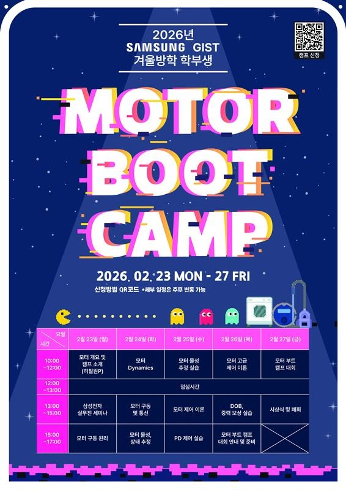
첫째 날에는 지능형 모터 인재 양성 센터의 센터장이신 허필원 교수님께서 지능형 모터 트랙 지원과 추후 개최 예정인 해커톤 대회에 대해 소개해주셨습니다.
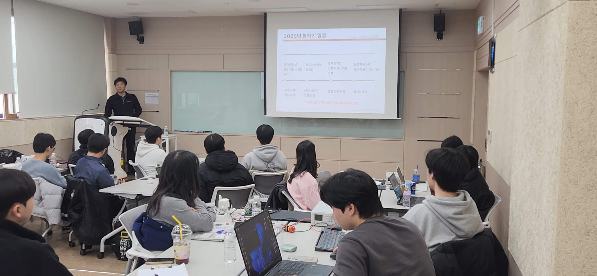
이후 이한결 학생이 모터 구동 원리에 대해 다루었습니다. 모터와 관련된 전기적, 기계적 내용과 모터에 대한 기본적인 내용들을 소개해주었고, 이어서 박제현 학생이 모터 Dynamics에 대해 강의해주었습니다. 첫날은 학생들이 모터에 대해 관심을 갖고 이해를 높일 수 있는 시간이었던 것 같습니다.
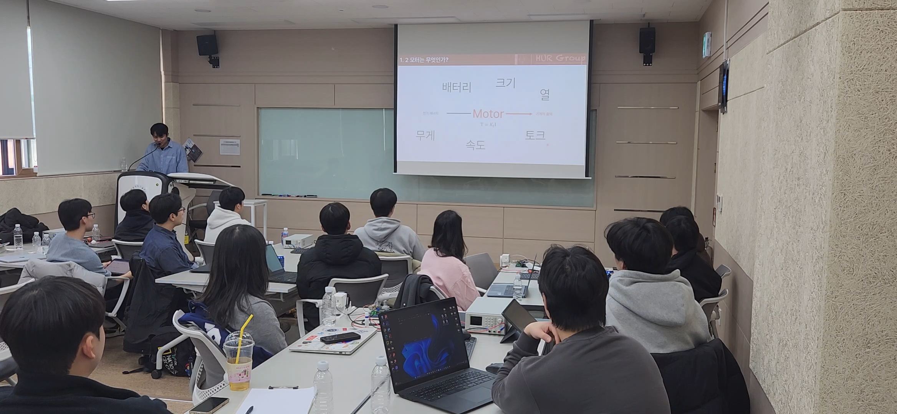
둘째 날에는 전 날에 이어 박제현 학생이 모터 구동 및 통신과 모터의 물성과 상태 추정에 대한 내용을 강의해주었습니다.
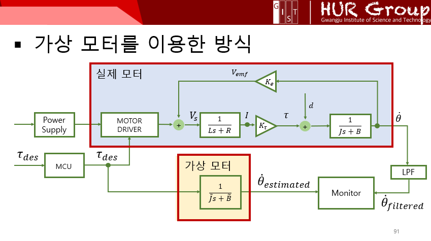
라플라스 변환과 필터, 모터 물성 추정 등에 대한 이론 강의 후 실제로 모터의 물성을 추정하기 위한 코드를 작성해보는 실습을 진행했습니다.
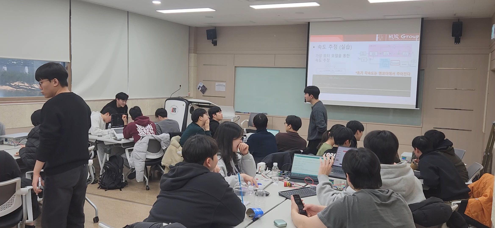
이론 내용이 어려웠을 수도 있는데 학생들이 중간중간 많은 질문을 해주어서 다른 학생들도 이해도를 높일 수 있었을 것 같습니다.
셋째 날 오전에는 실제로 물성을 추정해보는 실습을 진행했습니다. 학생들이 모터의 신호를 바꿔가면서 직접 모터의 물성 값들을 찾아보는 시간을 가졌습니다. 이론 강의만 하다가 실제로 모터를 움직여보는 실습을 하니 학생들이 더욱 흥미를 갖는 모습을 볼 수 있었습니다.
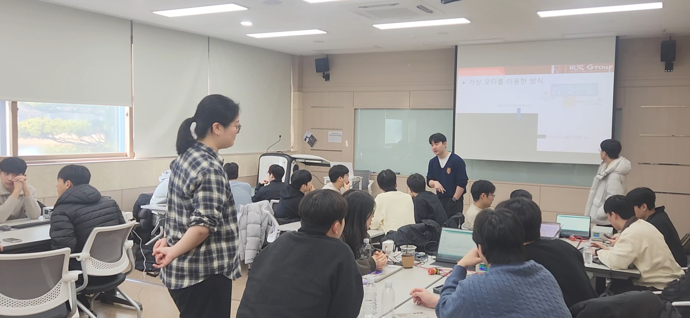
오후에는 김래헌 학생이 PD제어와 중력보상 등의 모터 제어 이론에 대해 강의해주었습니다. 그리고 쉬는 시간을 이용하여 중력 보상이 적용되었을 때 어떤 모습을 나타내는지 시연했고, 학생들이 모터에 부착된 링크를 움직여보며 중력 보상에 대해 느껴보는 시간을 가졌습니다. 그 후에는 학생들이 직접 PD 제어기를 작성하고 모터를 구동해보는 실습을 진행했습니다. 단순히 목표 토크 값을 입력했을 때와 목표 위치값을 설정했을 때의 모터 구동을 비교해보면서 차이점을 느껴보는 시간이었습니다.
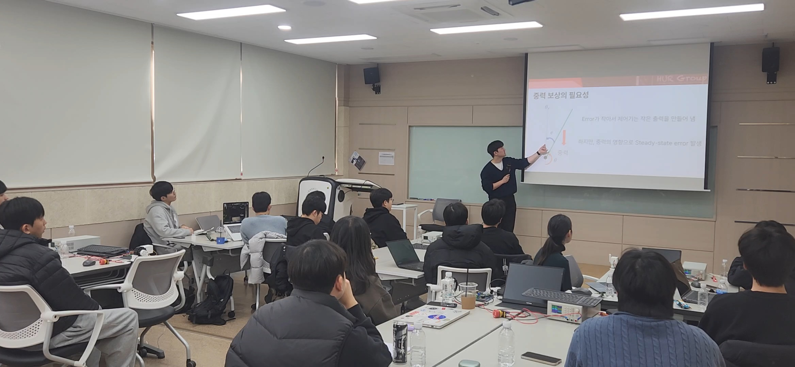
PD제어 실습 이후에는 모터 고급 제어 이론인 DOB(외란관측기)의 개요에 대해 설명하는 시간을 가졌습니다.
넷째 날에는 전날에 이어 김래헌 학생이 DOB에 대해 더 자세히 강의한 후, DOB를 코드로 구현해보는 실습을 진행했습니다. 모터를 구동시킨 후 모터의 움직임에 방해가 되는 힘(외란)을 가하여 DOB를 on/off 했을 때 모터가 어떤 거동을 나타내는지 그래프로 확인해보는 시간을 가졌습니다. 또한 모터를 손으로 직접 잡았을 때의 느낌을 직접 느껴보며 비교해보기도 했습니다. 모터의 힘을 실제로 느껴보며 학생들이 신기해하는 모습을 볼 수 있었습니다.
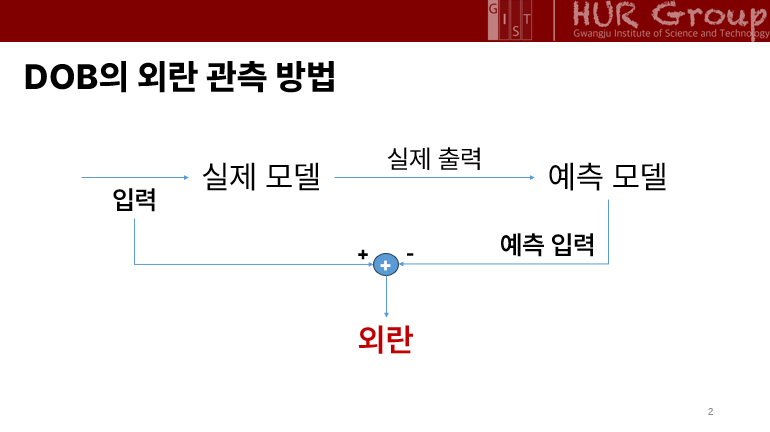
오후까지 준비한 이론과 실습을 모두 진행한 후, 목요일과 금요일 이틀 간 진행할 대회에 대해 안내하고, 1차 대회인 코드 작성 대회를 시작했습니다. 3일간 수업한 내용을 이용하여 PD제어기와 DOB를 처음부터 다시 직접 코드로 작성해보는 1차 대회를 진행한 후, 다음 날 진행할 투석기 대회의 1번 task를 연습해보는 시간을 가졌습니다. 대회가 너무 어렵진 않을지 걱정했는데, 학생들이 다들 열심히 수업을 들어주어 잘 따라와주었습니다.
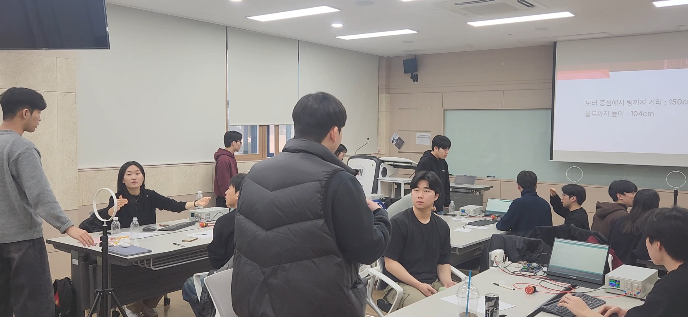
벌써 마지막 날이 되었습니다. 모터 부트 캠프 마지막 날에는 모터를 이용한 투석기로 공을 던져 목표 위치에 설치된 링에 넣는 대회로 진행되었습니다. 거리와 높이, 링의 크기를 바꿔가며 총 3개의 task로 진행되었고, 각 task마다 3번의 기회를 주고 몇 번의 시도만에 성공했는지에 따라 점수를 부여했습니다. 팀원들끼리 활발히 의견을 나누며 적극적으로 나서는 모습이 보기 좋았습니다. 대회가 끝나고 결국 등수는 나뉘었지만 다들 재밌게 대회에 참가해주었습니다.
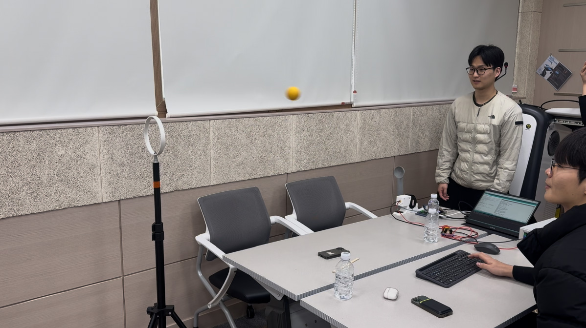
대회가 끝난 후, 교수님이 시상식을 진행해주셨습니다.
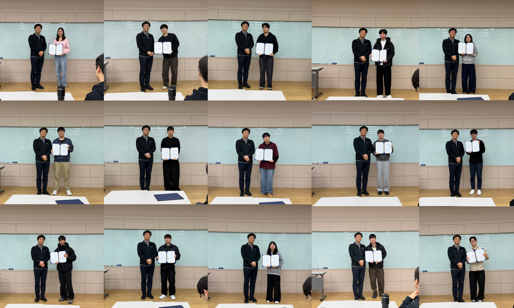
마지막으로 단체 사진을 찍고 2026 겨울방학 삼성-GIST 모터 부트 캠프를 마무리했습니다. 적극적으로 캠프에 참여해준 모든 학생들과, 캠프를 준비하고 진행해준 연구실 분들께 모두 수고 많으셨고 감사하다고 전하고 싶습니다!
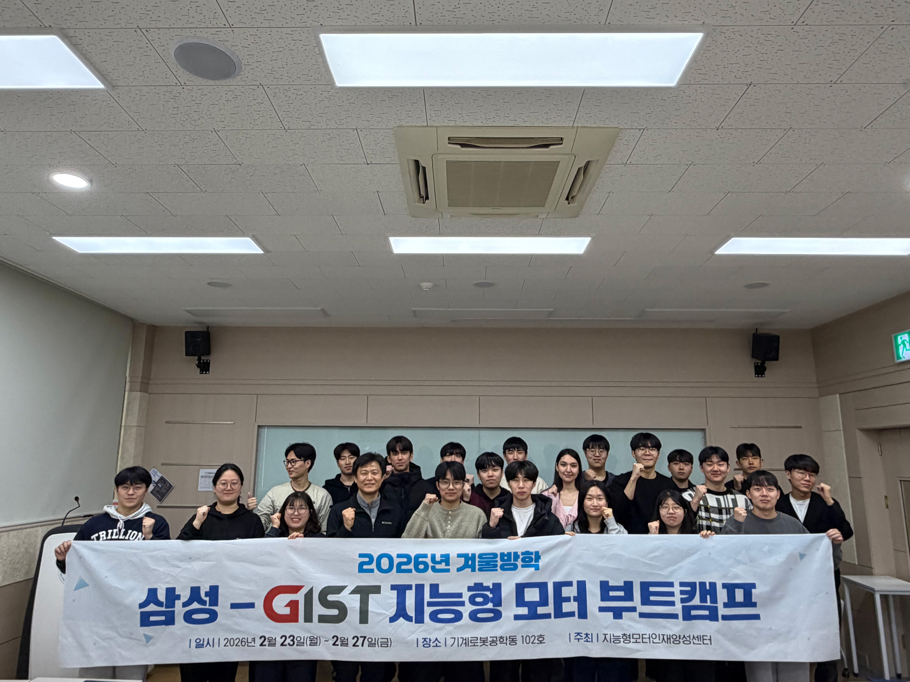
참가자 명단: 강민석, Alima, 박재우, 고범석, 윤준익, 권덕윤, 한지민, 김광혜, 정의현, 황우성, 김윤태, 전민지, 양지모, 최재영, 오다현, 안지우, 곽동혁 (17명)
조교: 성지윤, 박제현, 김래헌, 이한결, 양용승, 박수영
지원: 허필원 교수님, 마지원